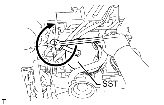

МАСЛО И МАСЛЯНЫЙ ФИЛЬТР > ЗАМЕНА |
| 1. СНИМИТЕ УПЛОТНЕНИЕ НИЖНЕЙ КРЫШКИ ДВИГАТЕЛЯ |
Выверните 2 болта и снимите уплотнение нижней крышки двигателя.
| 2. СЛЕЙТЕ МОТОРНОЕ МАСЛО |
Снимите крышку маслоналивной горловины.
Выверните пробку сливного отверстия масляного поддона с прокладкой, а затем слейте моторное масло в емкость.
Протрите масляный поддон и пробку сливного отверстия.
Установите новую прокладку и пробку сливного отверстия масляного поддона.
| 3. СНИМИТЕ МАСЛЯНЫЙ ФИЛЬТР В СБОРЕ |
 |
Снимите масляный фильтр с помощью SST.
| 4. УСТАНОВИТЕ МАСЛЯНЫЙ ФИЛЬТР В СБОРЕ |
Проверьте и очистите установочную поверхность масляного фильтра.
Нанесите чистое моторное масло на прокладку нового масляного фильтра.
Навинтите маслянный фильтр на место вручную. Затяните его так,чтобы уплотнение прилегало к посадочной поверхности.
|  |
Затяните масляный фильтр с помощью SST. В зависимости от места проведения работ выберите следующее.
Если есть достаточно места, затяните масляный фильтр с помощью динамометрического ключа.
Если для использования динамометрического ключа недостаточно места, затяните масляный фильтр на 3/4 оборота вручную или обычным ключом.
| 5. ЗАЛЕЙТЕ МОТОРНОЕ МАСЛО |
Залейте новое моторное масло.
| Параметр / Устройство | Класс масла | Вязкость масла (SAE) |
| Для моделей с DPF | ACEA C2 (использование моторного масла, отличного от ACEA C2, может привести к повреждению каталитического нейтрализатора) | - 0W-30 - 5W-30 (0W-30 – наилучшее масло с точки зрения экономии топлива и облегчения запуска двигателя в холодную погоду) |
| Для моделей без DPF | G-DLD1, API CF-4, CF или ACEA B1 (также можно использовать API CE или CD) | - 5W-30 - 10W-30 - 15W-40 - 20W-50 |
| Параметр / Устройство | Заданные условия |
| Слив и заполнение без замены масляного фильтра | 6,7 л (7,1 кварты США, 5,9 английской кварты) |
| Слив и заполнение с заменой масляного фильтра | 7,0 л (7,4 кварты США, 6,2 английской кварты) |
| Заполнение сухой системы | 7,5 л (7,9 кварты США, 6,6 английской кварты) |
Установите крышку маслоналивной горловины.
| 6. ПРОВЕРЬТЕ, НЕТ ЛИ УТЕЧЕК МАСЛА |
Запустите двигатель. Убедитесь, что в узлах, в которых выполнялись работы, нет утечек масла.
| 7. УСТАНОВИТЕ УПЛОТНЕНИЕ НИЖНЕЙ КРЫШКИ ДВИГАТЕЛЯ |
Установите уплотнение нижней крышки двигателя и закрепите его 2 болтами.
| 8. ПРОВЕРЬТЕ УРОВЕНЬ МОТОРНОГО МАСЛА |
Прогрейте двигатель, затем остановите его и подождите 5 минут. Уровень моторного масла должен находиться между отметками низкого и максимального уровней на щупе проверки уровня масла.
Если уровень низкий, проверьте, нет ли утечек, и долейте масло до максимальной отметки.